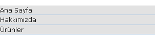
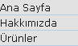
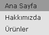

Web sitelerinin vazgeçilmez öğelerinde biridir menüler. Menüler
kullanıcının oluşturduğumuz sayfalara hızlı erişimini sağlar. Bir çok
site de Ürünler, İletişim, Hakkımızda vb. bölümlerini menü öğesi olarak
görürüz. Bu makalede sırasız listeler(
Sırasız listeler(<ul>) ilk olarak listeleme işlemleri için kullanılsa da CSS'in yükselişi ile birlikte menü oluşturmak için kullanılmaya başlandı. Aslında menülerde bir bakıma link listeleri olduğu düşünülürse işlevinin dışında kullanılmadığı da doğru bir tespittir. Kodumuzu yazmaya başlayalım:
<ul class="menu"> <li><a href="index.html">Ana Sayfa </a></li> <li><a href="hakkimizda.html">Hakkımızda</a></li> <li><a href="urunler.html">Ürünler</a></li> </ul>
Kodlama sonucu görüntü aşağıdaki gibi olacaktır.
Her linkin başındaki imgeleri kaldırmak için:
ul.menu { list-style-type: none; }
Bir çok web tarayıcısı sırasız listeleri(
- ) yorumlarken yukarıda
görüldüğü gibi otomatik olarak soldan bir padding/margin(bazı
tarayıcılarda padding uygularken bazılarında margin uygular) mesafesi
uygular bu mesafeyi sıfırlamak için:
ul.menu { list-style-type: none; padding: 0; margin: 0; }

Bu bölüme kadar yazılan kodlamalar hem dikey menüler hem de yatay menüler içinde aynıdır. Ancak bundan sonra dikey menü ve yatay menü için kodlar değişecektir.
Dikey Menüler
Dikey menülerde linkler yukarıdan aşağı doğru sıralanmıştır. Link elementi(a) inline-elementtir, her linke rollover özelliği kazandırmak için:
ul.menu a { display: block; }
Biraz görselliği arttırırsak:
ul.menu a { display: block; color: #1B1B1B; background-color: #E2E2E2; }

Linkler web tarayıcısının genişliği kadar uzayacaktır, kendi istediğimiz genişliğe sahip olmak için:
ul.menu a { display: block; color: #1B1B1B; background-color: #E2E2E2; width:8em; }

Linkler arasına biraz boşluk verelim:
ul.menu a { display: block; color: #1B1B1B; background-color: #E2E2E2; width:8em; padding: .2em .8em; }

Linklerin altındaki çizgileri kaldıralım:
ul.menu a { display: block; color: #1B1B1B; background-color: #E2E2E2; width:8em; padding: .2em .8em; text-decoration: none; }

şimdi linklerimize rollover efekti vermek için a:hover kullanacağız:
ul.menu a:hover { background-color: #999; }

son olarak linklerin arasını ayıralım:
ul.menu li { margin: 0 0 .2em 0; }
İşte menümüzün son hali
Yorumlar !